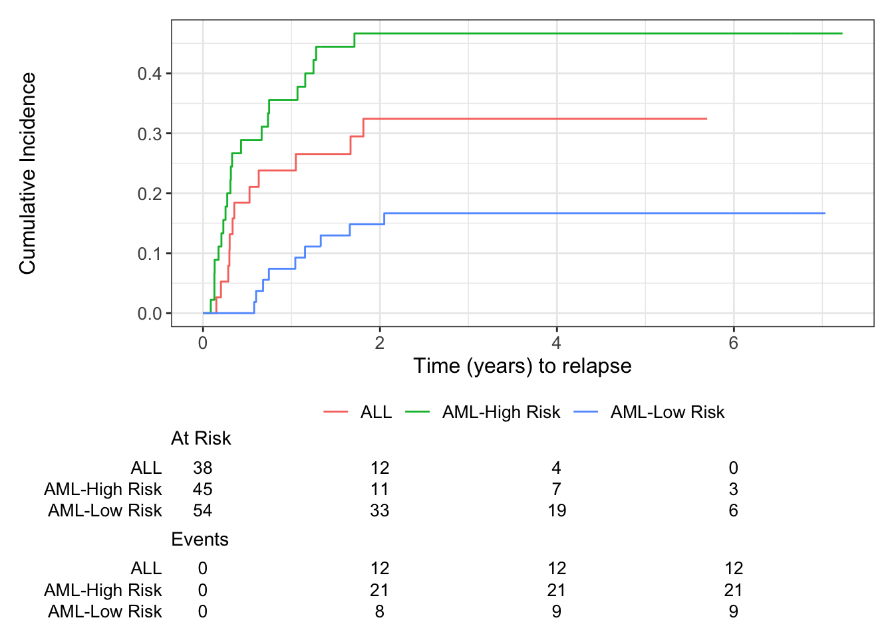

Estimating Cumulative Incidence Functions Using R
Objective
In this document we present how to estimate the cumulative incidence function (CIF) in R. We focus on the competing risks model where each subject experiences only one out of k possible events as depicted in the figure below.
R Packages
We identify three packages:
cmprsktidycmprsksurvival
The cmprsk package implements the methods described in Gray (1988) for testing CIFs across different groups. The tidycmprsk package is a wrapper for cmprsk. It uses syntax similar to other survival analysis packages, and returns survival objects. In this document, we illustrate how to use the tidycmprsk package for estimating and testing CIFs. More details and other functionalities can be found here.
The survival package is a general purpose survival analysis package. Its scope is far beyond the competing risks model. We will demonstrate how to estimate the CIFs using this package.
Data used
The bone marrow transplant (BTM) dataset as presented by Guo & So (2018) is used. The dataset has the following variables:
Grouphas three levels, indicating three disease groups: ALL, AML-Low Risk, AML-High Risk.Tis the disease-free survival time in days. A derived variableTYears = T/365.25is used in the analysis.Statushas value 0 ifTis censored; 1 ifTis time to relapse; 2 ifTis time to death.WaitTimeis the waiting time to transplant in days. This variable is not used here.A new variable
IDis created.
require(dplyr)
bmt <- haven::read_sas(file.path("../data/bmt.sas7bdat")) %>%
mutate(
Group = factor(Group,
levels = c(1, 2, 3),
labels = c('ALL', 'AML-Low Risk', 'AML-High Risk')
),
Status = factor(Status,
levels = c(0, 1, 2),
labels = c('Censored', 'Relapse', 'Death')),
TYears = T / 365.25,
ID = row_number()
)Estimating CIFs
The tidycmprsk Package
CIF Estimates and Gray’s Test
The tidycmprsk::cuminc() function requires a Surv object. Therefore, the first level of the event status variable (in this example Status) must represent censoring.
require(survival)
require(tidycmprsk)
require(tidyverse)
cif.1 <- cuminc(Surv(TYears, Status) ~ Group, data = bmt) Gray’s test statistics and p-value:
knitr::kable(
glance(cif.1) %>%
pivot_longer(
everything(),
names_to = c(".value", "outcome_id"),
names_pattern = "(.*)_(.*)"
)
)| outcome_id | outcome | statistic | df | p.value |
|---|---|---|---|---|
| 1 | Relapse | 11.9228820 | 2 | 0.0025762 |
| 2 | Death | 0.1374108 | 2 | 0.9336017 |
CIF estimates for time to relapse at selected timepoints for ‘AML-Low Risk’ patients:
knitr::kable(
cif.1 %>%
tidy(times = c(0.5, 1, 1.5, 2, 3)) %>%
select(time, outcome, strata, estimate, std.error, conf.low, conf.high) %>%
filter(outcome == 'Relapse' & strata == 'AML-Low Risk') %>%
mutate(time = as.character(time),
across(where(is.numeric), ~ num(., digits = 4))
)
)| time | outcome | strata | estimate | std.error | conf.low | conf.high |
|---|---|---|---|---|---|---|
| 0.5 | Relapse | AML-Low Risk | 0.0000 | 0.0000 | NA | NA |
| 1 | Relapse | AML-Low Risk | 0.0741 | 0.0360 | 0.0234 | 0.1646 |
| 1.5 | Relapse | AML-Low Risk | 0.1296 | 0.0463 | 0.0563 | 0.2344 |
| 2 | Relapse | AML-Low Risk | 0.1481 | 0.0489 | 0.0685 | 0.2565 |
| 3 | Relapse | AML-Low Risk | 0.1667 | 0.0514 | 0.0813 | 0.2783 |
Two points to note:
The current version of
cmprsk, and hencetidycmprsk,estimates the variance of the CIF estimates asymptotically as in Aalen (1978). There is no option to change it to other methods.tidycmprsk::cuminc()offers pointwise CIs for the CIF estimates using the log-log transforms. There is no other options.
CIF Plots
require(ggsurvfit)
cif.1 %>%
ggcuminc(outcome = 'Death') +
## add_confidence_interval() +
add_risktable() +
xlab('Time (years) to death')cif.1 %>%
ggcuminc(outcome = 'Relapse') +
## add_confidence_interval() +
add_risktable() +
xlab('Time (years) to relapse')
The survival Package
CIF Estimates
Using the bone marrow transplant example, the following code shows how to estimate the CIF for time to relapse or to death:
cif.2 <- survfit(Surv(TYears, Status) ~ Group,
data = bmt,
se.fit = TRUE,
conf.type = 'log-log', ## default is 'log'
id = ID,
robust = TRUE ## default for multi-state model
)
## summary(cif.2)A few points to note:
survfit()returns the probability of being in a state (pstate). The CIF is its complement, i.e.,CIF = 1 - pstate.Gray’s test for testing equality across groups is not performed.
In this example
survfit()recognizes that the input are in multi-state model format; therefore, it estimates the variances of the CIFs with an infinitesimal jackknife (see Therneau (2024)). The CIs, as a result, are different from that estimated based on Aalen’s or the delta method as done in SAS PROC LIFETEST.The survival package also offers a different syntax for estimating CIFs. Users need to first call
finegray()separately for each event to reformat the data, then applysurvfit()for each event. The CIF estimates are identical since the same estimation method is used; the variances can be different from directly callingsurvfit()with data in multi-state model format, sincefinegray()artificially extends the observed time for the competing events (see Therneau (2024)).
CIF Plots
The same ggcuminc() syntax can be applied to the survfit() output cif.2.
Summary
Both tidycmprsk::cminc() (as inherited from cmprsk::cuminc()) and survival::survfit() implement Aalen-Johansen estimator. For competing risks it reduces to CIF, which has a closed form formulation. The results are identical as produced by SAS PROC LIFETEST.
Certain options in SAS, e.g., the delta method for variance estimation or other types of transformation for calculating the CIs, are not available in the current versions of tidycmprsk::cuminc() or survival::survfit(). However, the outputs from both contain enough information that these options can be manually implemented by users. For example, Pintilie (2006) provides R code for deriving the variances for the estimated CIFs based on the delta method.
Session Info
#| echo: false
si <- sessioninfo::session_info(
c("cmprsk", "tidycmprsk", "survival" ) #Vector of packages used
, dependencies = FALSE)
si─ Session info ───────────────────────────────────────────────────────────────
setting value
version R version 4.4.3 (2025-02-28)
os Ubuntu 24.04.2 LTS
system x86_64, linux-gnu
ui X11
language (EN)
collate C.UTF-8
ctype C.UTF-8
tz Europe/London
date 2025-03-13
pandoc NA (via rmarkdown)
─ Packages ───────────────────────────────────────────────────────────────────
! package * version date (UTC) lib source
P cmprsk 2.2-12 2024-05-19 [?] RSPM (R 4.4.0)
P survival * 3.7-0 2024-06-05 [?] RSPM (R 4.4.0)
P tidycmprsk * 1.1.0 2024-08-17 [?] RSPM (R 4.4.0)
[1] /home/michael/source/CAMIS/renv/library/linux-ubuntu-noble/R-4.4/x86_64-pc-linux-gnu
[2] /opt/R/4.4.3/lib/R/library
P ── Loaded and on-disk path mismatch.
──────────────────────────────────────────────────────────────────────────────Reference
Aalen O. (1978). Nonparametric Estimation of Partial Transition Probabilities in Multiple Decrement Models, Annals of Statistics, 6:534-545.
Gray R. (1988). A Class of K-Sample Tests for Comparing the Cumulative Incidence of a Competing Risk, Annals of Statistics, 16:1141-1154.
Gray R. (2024). cmprsk: Subdistribution Analysis of Competing Risks. R package version 2.2-12. https://cran.r-project.org/web/packages/cmprsk/cmprsk.pdf
Guo C and So Y. (2018). Cause-Specific Analysis of Competing Risks Using the PHREG Procedure. In Proceedings of the SAS Global Forum 2018 Conference. Cary, NC: SAS Institute Inc. https://support.sas.com/resources/papers/proceedings18/2159-2018.pdf.
Pintilie M. (2006). Competing Risks: A Practical Perspective. Wiley.
http://dx.doi.org/10.1002/9780470870709
Sjoberg D and Fei T. (2023). tidycmprsk: Competing Risks Estimation. https://github.com/MSKCC-Epi-Bio/tidycmprsk
Therneau T. (2024). A Package for Survival Analysis in R. R package version 3.7-0, https://CRAN.R-project.org/package=survival.